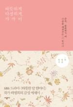

처음 소개해드릴 책은 '우리가 결혼할 수 있을까', '따뜻한 말 한마디', '닥터스'를 쓴 하명희 작가의 《따뜻하게 다정하게, 가까이》예요. 하명희 작가의 드라마 중에 특히 '따뜻한 말 한마디'를 재밌게 봤던 기억이 나요. 저는 대사가 탁탁 꽂히는 드라마를 좋아하는 편인데, 이 드라마의 대사들을 보면 어느 하나 공감되지 않는 인물이 없었어요. 심지어 불륜을 저지르는 나은진(한혜진 역)과 유재학(지진희 역)의 마음까지도 공감하게 만드는 힘이 있더라고요.
하명희 작가는 절대 에세이는 출간하지 않으려고 했으나, 어쭙잖은 위로라도 될 수 있기를 바란다는 맘으로 책을 썼다고 하는데요. 《따뜻하게 다정하게, 가까이》는 얇은 두께로 사진과 글이 어우러져 가볍게 SSGㅡ 읽을 수 있는 책이에요. 처음은 '나'에 관한 이야기로, 두 번째는 '당신'에 관한 이야기로 구성이 되어 있습니다. 드라마 작가라 중간에 배우들과 관련된 이야기가 있어 궁금증을 유발하기도 하고, 자신이 쓴 드라마에 관한 이야기도 있어서 재미있게 읽을 수 있어요. 위로가 되는 말들도 곳곳에 있어서 마음이 복잡하거나 외로울 때 읽으면 좋을 것 같아요. 개인적으로는 드라마를 보고 난 기대감이 있어서 그런지, 조금만 더 깊이 있는 글을 볼 수 있었으면 좋았겠다는 아쉬움이 남기는 했어요.

따뜻하게 다정하게, 가까이
저자 하명희
출판 시공사
발매 2014.10.28
자신의 마음을 이해받고 있다는 것을 알면,
자신의 사랑이 인정받고 있다는 것을 느끼면,
특별한 말도 아닌 "밥 먹어."라는 말에도 감동한다.
사람 사이에 사랑받고 있다는 느낌이 기저에 있으면
그 사람에게 주는 따뜻한 말 한마디는
핵폭탄의 위력을 발휘한다.
다음은 마스다 미리의 《지금 이대로 괜찮은 걸까?》입니다. 마스다 미리는 공감 만화와 에세이로 너무 유명하죠. 특별할 것 없는 일상에서 우리가 흔히 느끼는 감정들을 잘 표현해내고 있는 것 같아요. 에세이를 추천해드릴까 하다가 만화부터 소개해드리고 싶어서 선택하게 됐어요.
《지금 이대로 괜찮은 걸까?》는 마스다 미리의 베스트셀러인 '수짱 시리즈'의 첫 번째 이야기입니다. 엄청 잘 그린 그림도 아닌데(표지에 있는 그림이 주인공 수짱이랍니다) 글귀 하나하나가 마음을 툭툭 건드리더라고요. 보통 사람들의 보통 이야기만큼 우리 마음을 건드릴 수 있는 게 없잖아요? 특히나 수짱이 이와이와 나카다 매니저의 비밀 연애와 결혼 소식을 듣고 느끼는 감정의 변화를 보면서 웃음이 났어요. 누구나 한 번쯤 가져봤을 감정이지 않을까 하는 생각이 들었거든요. 30분도 안 걸리는 짤막한 만화지만 그 안에 가지고 있는 의미는 제법 진중하답니다.
지금 이대로 괜찮은 걸까?
저자 마스다 미리
출판 이봄
발매 2013.07.22
좋은 사람이란 어떤 사람? 좋은 사람이란 멋진 사람?
자기다운, 그러니까 자기밖에 할 수 없는 그런 일을 가진 사람이 멋진 사람?
특별한 말도 아닌 "밥 먹어."라는 말에도 감동한다.
반짝반짝 빛나는 듯한 사람으로 변하고 싶은 게 아니라
지금보다 조금 좋은 사람으로 변하는 것만으로도 좋다.
마지막으로 추천해드릴 책은 '타블로와 꿈꾸는 라디오', '김C의 뮤직쇼' 김재연 작가의 《너의 마음이 안녕하기를》입니다. 이 책도 사진과 글이 있는 에세이인데요, 감성적인 글들이 묻어나는 책이에요. 작가는 청취자의 사연이나 DJ의 좋은 말은 직접 손글씨 사진을 만들어 보관한다고 하는데요, 책 안에서도 손글씨 사진을 볼 수 있답니다.
저는 이 책에서 재미있던 글이 있었어요. 바로 '인생을 거꾸로 돌려보면'이라는 부분인데요.
영화 '올드보이'를 거꾸로 보면 폭력적인 남자가 15년간 독방에서 재활치료를 받고 평범한 가장이 되고,영화 '죠스'를 거꾸로 보면, 상어가 사람들을 토해내서 해수욕장을 만든다.
영화 같은 이야기들은 거꾸로 돌려봐도 역시 영화가 된다.
작가도 지인의 블로그에서 발견한 글이라고 하는데, 재미있지 않나요? 이것뿐만 아니라 곳곳에서 작가의 번뜩이는 재치와 기발한 발상이 발견된답니다. 책에 나오는 영화나 시, 소설 등은 꼭 시간 내서 찾아보려고요. 작가의 감성이 저와 통할 것 같다는 생각이 들었거든요ㅎㅎ
너의 마음이 안녕하기를
저자 김재연,밤삼킨별
출판 인디고
발매 2015.04.05
오늘 제가 추천해드린 책들은 정말 가볍게 읽을 수 있는 책들이에요. 마음이 복잡하고 심란할 때는 가벼운 글들만으로도 위안이 될 수 있거든요.
요즘 혼자 사는 남녀도 요리를 많이 하죠. '요섹남'이 대세라고 하잖아요? 인스턴트로 대충 끼니 때우지 마시고, 나만을 위한 요리를 해보는 건 어떨까요? 초간단 김가루 주먹밥부터, 중국, 일본, 동남아 등 글로벌 메뉴까지 다양하게 나와있어요. 돌아오는 주말에는 혼자서도 맛있는 밥을 지어먹기로 해요!
신동엽, 성시경은 오늘 뭐 먹지?
저자 Olive 제작팀
출판 중앙북스
발매 2016.12.20
조해너 배스포드의 《비밀의 정원》은 많이들 들어보셨죠? 컬러링북이 나오면서 선풍적인 인기를 끌었다는 사실에 무척 놀랐었는데요. 의외로 컬러링북을 완성해가면서 혼자 집중할 수 있는 시간을 가지고, 나만의 작품을 만들 수 있다는 것에 매력을 느끼는 사람들이 많더라고요. '72색 색연필도 부족하다'면서 아마존에서 색연필을 직구하는 것도 목격했어요 ㅎㅎ 《비밀의 정원》 뒤를 이어 나온 《신비의 숲》도 한 번 도전해보세요.
신비의 숲
저자 조해너 배스포드
출판 클
발매 2015.03.02